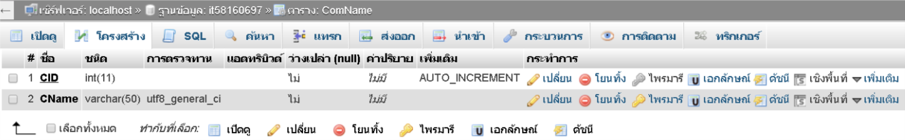

ทำการสร้างฐานข้อมูลขึ้นมาทั้งหมด 3 ฐานข้อมูล ได้แก่ ComName, DocList และ DocCom
ComName เป็นฐานข้อมูลที่ใช้สำหรับจัดเก็บรายชื่อกรรมการ มี
- CID สำหรับเก็บเลขไอดีในรูปแบบของตัวเลข ชนิด int ขนาด 11 โดยให้มีการรันไอดีโดยอัตโนมัติ เป็น Primary key
- CName สำหรับเก็บรายชื่อกรรมการ ชนิด varchar ขนาด 50 โดยใช้ utf8_general_ci เพื่อให้สามารถแสดงชื่อแบบภาษาไทยได้
DocList เป็นฐานข้อมูลสำหรับเก็บลสยละเอียดต่างๆของเอกสาร
- DID เก็บข้อมูลเลขไอดีในรูปแบบ int ขนาด 11 โดยให้มีการรันไอดีแบบอัตโนมัติ เป็น Primary key
- DCode เก็บรหัสของคำสั่งแบบ varchar ขนาด 50 โดยใช้ utf8_general_ci สาเหตุที่เลือกเก็บข้อมูลแบบ varchar เพราะว่ารหัสของคำสั่งอาจมีตัวหนังสือและตัวเลขได้
- DName เก็บชื่อคำสั่งแบบ varchar ขนาด 1000 โดยใช้รูปแบบ utf8_general_ci
- DSDate เก็บข้อมูลวันที่เริ่มต้นของคำสั่งในเอกสาร รูปแบบ date
- DEDate เก็บข้อมูลวันที่สิ้นสุดของคำสั่งในเอกสาร รูปแบบ date
- DStatus เก็บข้อมูลของสถานะของคำสั่ง ในรูปแบบ tinyint ขนาด 4 เพราะเก็บเป็นตัวเลข
- DLink เก็บลิงค์ที่ใช้สำหรับเชื่อมไปยังเอกสาร รูปแบบ varchar ขนาด 255 โดยใช้ utf8_general_ci
DocCom เป็นฐานข้อมูลที่เก็บเฉพาะไอดีที่มาจากฐานข้อมูล ComName และ DocList
- DCID จัดเก็บเลขไอดีในรูปแบบ int ขนาด 11 โดยให้มีการรันไอดีแบบอัตโนมัติ เป็น Primary key
- DID ทำการเก็บเลขไอดีจาก DocList ชนิด int ขนาด 11
- CID ทำการเก็บเลขไอดีจาก DocList ชนิด int ขนาด 11